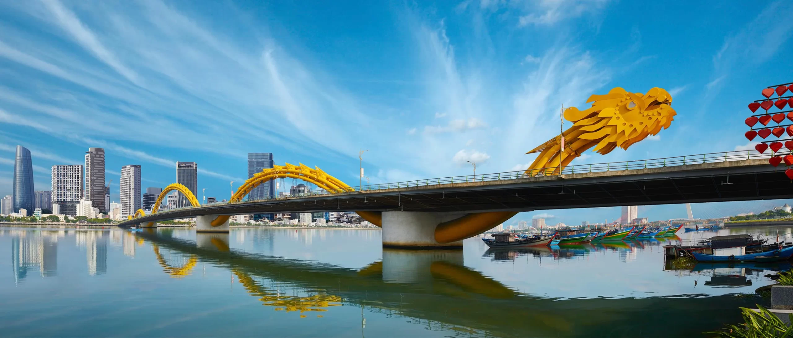

Bãi biển Mỹ Khê
Bờ biển rộng, nước trong và bầu không khí đầy năng lượng ngay gần trung tâm thành phố.
Xem điểm đếnMiền Trung Việt Nam
Chạm vào biển xanh, núi non hùng vĩ và nhịp sống trẻ trung của thành phố đáng sống bên sông Hàn.
Khám phá ngayMột thành phố nhiều trải nghiệm
Đà Nẵng chinh phục du khách bằng sự hòa quyện hiếm có giữa biển, núi và đô thị hiện đại. Buổi sáng bạn có thể dạo chân trên cát mịn Mỹ Khê, trưa thưởng thức tô mì Quảng đậm đà, rồi chiều ngắm hoàng hôn từ bán đảo Sơn Trà. Thành phố có đường sá thông thoáng, nhịp sống văn minh và những người dân thân thiện. Từ đây, hành trình đến Hội An, Huế hay Thánh địa Mỹ Sơn cũng rất thuận tiện, khiến Đà Nẵng trở thành điểm dừng chân lý tưởng cho mọi chuyến đi.

Gợi ý hành trình
Ba sắc thái đặc trưng để bắt đầu chuyến khám phá Đà Nẵng.
Bờ biển rộng, nước trong và bầu không khí đầy năng lượng ngay gần trung tâm thành phố.
Xem điểm đếnKhông khí mát lành trên núi cùng những công trình ấn tượng tạo nên một ngày thật khác biệt.
Xem điểm đếnCon đường ven núi, rừng xanh và các vịnh biển đẹp mở ra góc nhìn rất riêng về Đà Nẵng.
Xem điểm đếnHương vị miền biển
Từ mì Quảng mộc mạc đến hải sản vừa lên bờ, ẩm thực Đà Nẵng luôn có cách khiến chuyến đi thêm trọn vẹn.